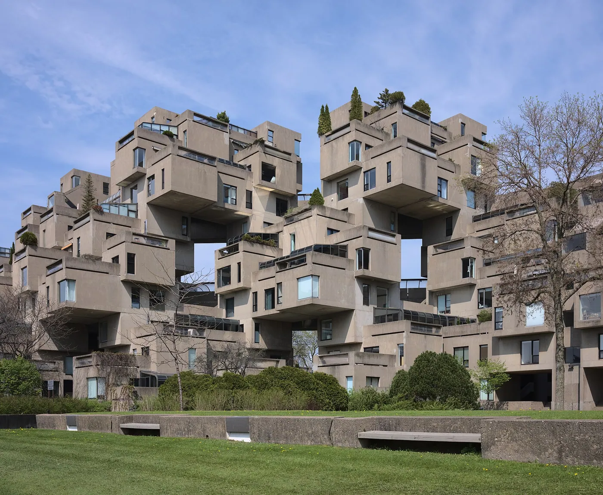
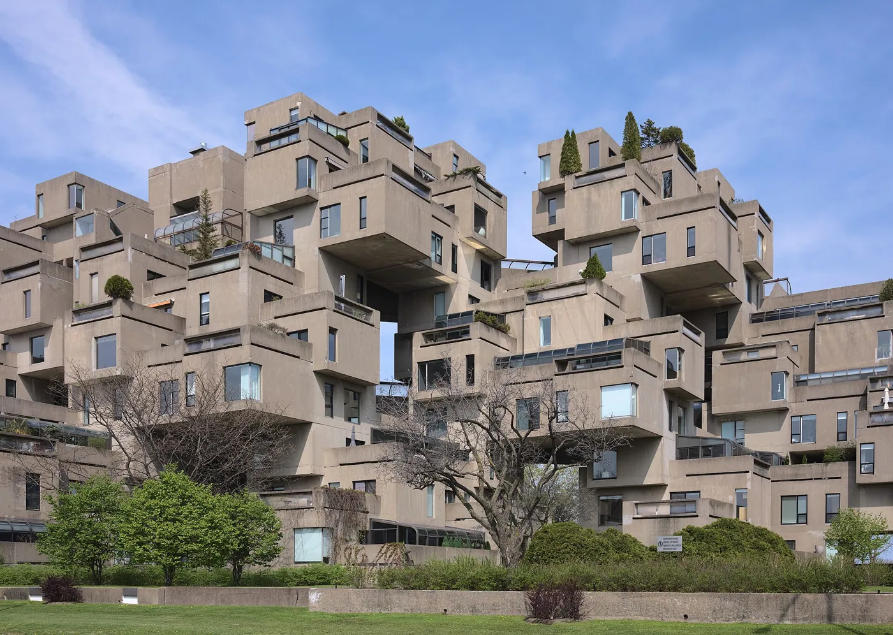
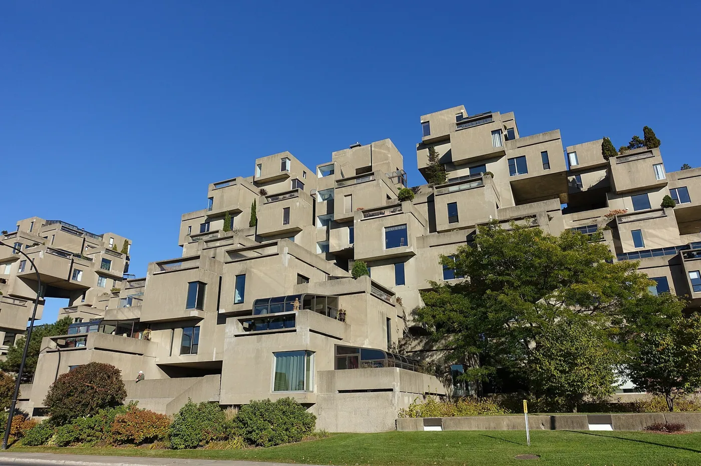
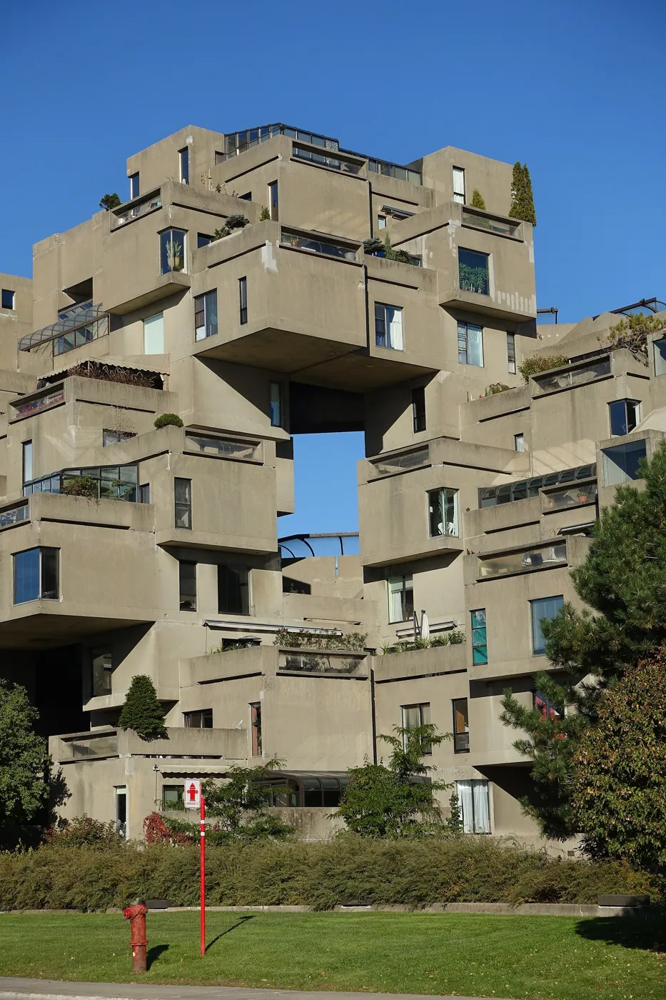
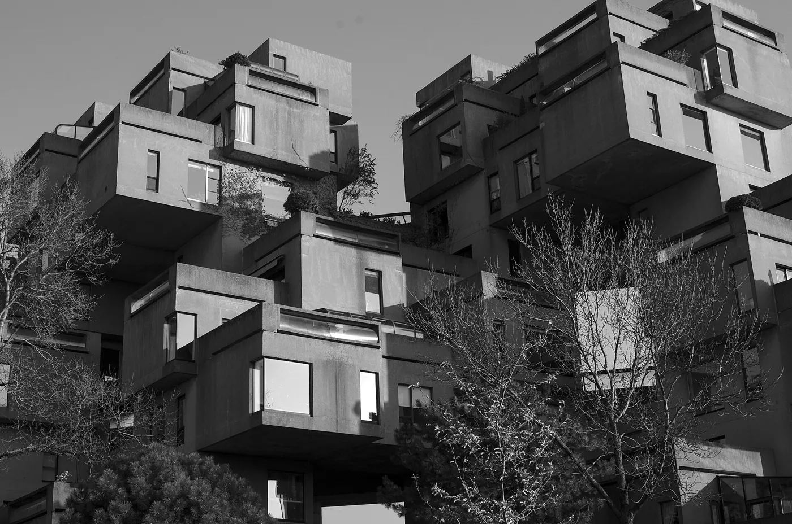
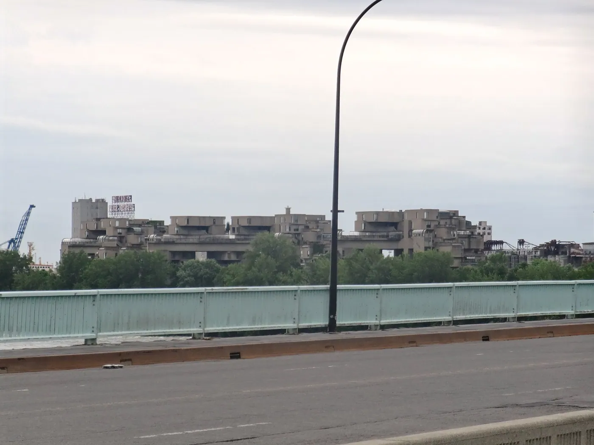
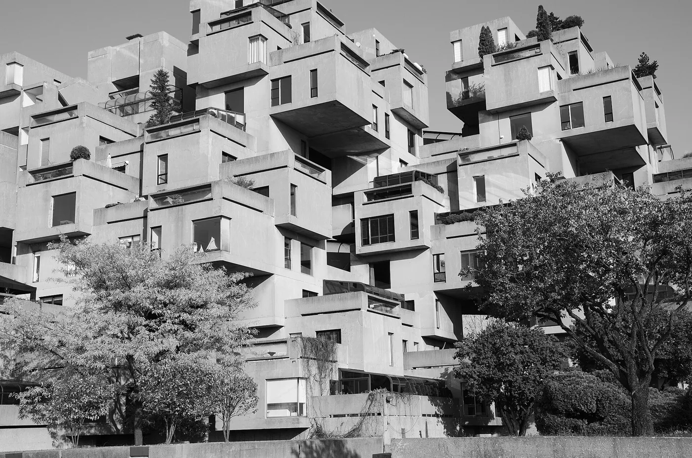
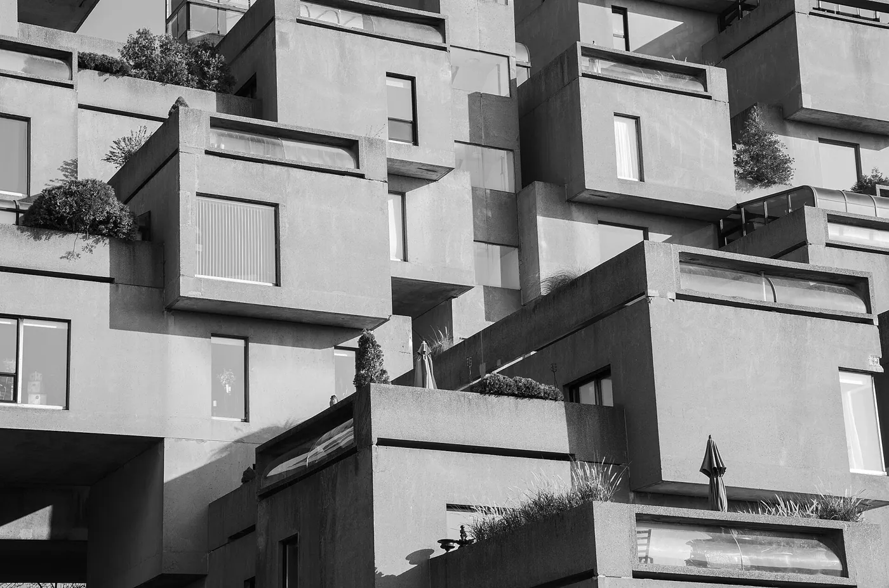

1/8 · Exterior · Ground level view of Habitat 67 in MontrealPhoto: Dllu · CC BY-SA 4.0 · source
2/8 · Exterior · Habitat 67 @ Cité du Havre @ MontréalPhoto: Guilhem Vellut from Annecy, France · CC BY 2.0 · source
3/8 · Exterior · Habitat 67 @ Cité du Havre @ MontréalPhoto: Guilhem Vellut from Annecy, France · CC BY 2.0 · source
4/8 · Exterior · Habitat 67 @ Cité du Havre @ MontréalPhoto: Guilhem Vellut from Annecy, France · CC BY 2.0 · source
5/8 · DetailPhoto: Matias Garabedian from Montreal, Canada · CC BY-SA 2.0 · source
6/8 · DetailPhoto: Matias Garabedian from Montreal, Canada · CC BY-SA 2.0 · source
7/8 · DetailPhoto: Matias Garabedian from Montreal, Canada · CC BY-SA 2.0 · source
8/8 · Context · Habitat 67 @ Cité du Havre @ MontréalPhoto: Guilhem Vellut from Annecy, France · CC BY 2.0 · sourceHousing · Brutalism
Habitat 67
Moshe Safdie · Montréal, Canada · 1967
Key features354 prefabricated modules stacked so each flat gets a garden on a neighbour's roof.
- Architect
- Moshe Safdie
- Place
- Montréal, Canada
- Year
- 1967
- Typology
- Housing
- Movement
- Brutalism
- Region
- Americas
See it on the wall


.jpg){kind=link}
.jpg){kind=link}
.jpg){kind=link}
.jpg){kind=link}
.jpg){kind=link}
.jpg){kind=link}
.jpg){kind=link}